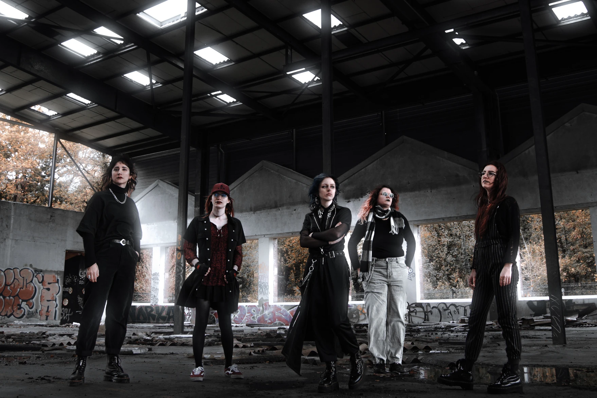

MERCES
— groupe de métal féministe et queer
Au milieu d'une scène métal prédominée par des artistes masculins
parfois problématiques, Merces est une bouffée d'air militante.
C'est une rage violente contre un système d'oppressions. C'est un cri
du cœur porté par des queers féministes qui font face quotidiennement
à ses conséquences. C'est un scream qui traduit la lourdeur de ces
sujets : santé mentale, antifascisme, identité, lgbtphobies,
féminicides...
Mais Merces, néo-divinité guide des personnes LGBTQIA+, porte aussi un
message d'espoir : notre place est là, nos revendications seront
entendues.
À la croisée des genres, les riffs dissonants et saturés de Merces
s'inspirent aussi bien de black métal, death mélodique, que de
mouvements plus récents avec des breaks à la metalcore. L'alternance
du scream et du chant clair incarne aussi bien la colère enflammée du
groupe que les émotions intenses qui l'alimentent.
Ressources
Réseaux
Chansons
📢 Nous avons actuellement une setlist de 30 minutes
-
Set Fire To My Face parle de dysphorie de genre & plus
généralement des attentes de la société concernant la pilosité des
personnes trans & des femmes.
-
The Beast et A Single Lantern In Town parlent de santé
mentale (notamment de dépression).
-
Forbidden Love parle d'amour sapphique, au travers de
l'histoire de Mademoiselle de Maupin, idole queer.
-
Burned lie le thème des féminicides et de l'écocide via la
figure de la sorcière.
-
Siammo Tutti Antifascisti est une critique de la montée du
fascisme que l'on observe partout dans le monde.
-
Rome est une reprise de la chanson éponyme de Solann. Son thème
est profondément féministe et le harcèlement qu'a subi l'artiste après
sa sortie est d'autant plus rageant et inspirant.
-
Nous avons d'autres musiques en cours d'écriture : Pendulum, Angry
Dykes, et Blood And Tears
Concerts
-
17.06.26 Concert organisé par Le Ciel
Le Ciel (Grenoble)
-
07.05.26 Concert organisé par Diaoulig
avec RainDrop + Encounters
Austra Rocks (Saint-Martin d'Hères)
-
21.06.25 Fête de la musique organisé par Le
Centre Social 38
avec Gintsugi + Tempête de chiennes + Sian,
Rima, Abraze, DJ remix
Centre Social 38 (Grenoble)
-
24.11.23 Soirée Queer Punk organisée par Le
Label Squelette
avec Resille + Basseville
Le Bezimena (Grenoble)
Contact
💌 merces.band[at]proton.me